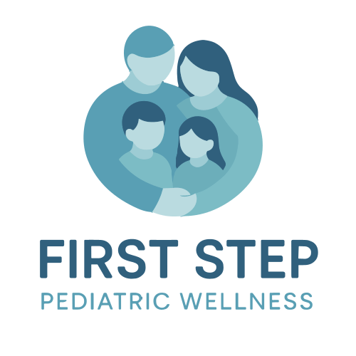

Your child’s first step began a beautiful journey, we’ll safeguard every step that follows...
#SmallStepsBigImpact
Login to access Wellness.ai - our comprehensive assessment intelligence to understand and support your holistic development.
We are dedicated to providing comprehensive and compassionate care to empower the next generation towards a healthier, happier future.
Our mission is to transform pediatric care by focusing on prevention and early intervention. We believe in a holistic approach that nurtures the physical, emotional, and social well-being of every child.
We partner with schools and communities to create a supportive environment where children can thrive, building the foundation for a lifetime of wellness.
We envision a world where every child has access to the resources and support they need to achieve optimal health. Our goal is to create a new standard of care that is proactive, personalized, and deeply rooted in community.
By empowering families with knowledge and tools, we hope to build a future where health is not just the absence of illness, but a state of complete physical, mental, and social well-being.
Our Products and Services are built on a rigorous research initiative led by our Co-founder, Ms.Ngamnui Wangsa, a pediatric health expert. The research was conducted through the Pediatric Division at MS Ramaiah Institute of Nursing Education and Research. It was trial-based and conducted in real-world school environments to ensure practical relevance and immediate applicability. Published findings from this research form the scientific backbone of our company.
Recognizing the importance of equitable access, we provide our full program at no cost to students from economically disadvantaged backgrounds. Our commitment to child wellness extends beyond our partner schools through a number of social impact initiatives. These include bridgeit programs conducted in government schools, orphanages, and for underprivileged children, as well as targeted wellness workshops for underprivileged youth.
1. Empower Women: Create a platform that supports and uplifts women, providing them with opportunities for growth and leadership.
2. Child Centered Wellness: Provide wellness initiatives and programs that promote promote healthy physical, emotional, and mental development among school children, helping them thrive and reach their full potential.
3. Equality for All: Provide all children, including those who are underprivileged, economically challenged, or facing physical/ mental/ learning disabilities, with the same high-quality wellness programs, services, and resources that we offer to all our children regardless of their background, ability, or socioeconomic status.
We offer an ecosystem products and services designed by our product and medical experts to assess, support, and enhance the holistic health, wellness, and development of students.
First Station serves as the starting point where wellness stations are set up to educate parents about the importance of holistic child wellbeing. It introduces families to the program, explains each assessment in detail, and highlights the value of proactive health practices in supporting a child’s growth and development.
OCALO (Ophthalmic, Cardiopulmonary, Anthropometric, Lifestyle, and Oral Assessments) offers a comprehensive health evaluation for every student enrolled in First Step Pediatric Wellness. Each child undergoes three checkups annually and receives a Health Metrics Report reviewed, signed, and sealed by a certified medical professional.
Wellness.ai is an intelligent online assessment platform that enables students to complete wellness, lifestyle, and resilience evaluations in a private and secure manner. Validated by medical professionals and grounded in multi-year research, it generates a personalized First Step Pediatric Wellness Certificate for each student.
Bridgeit transforms insights from OCALO and Wellness.ai assessments into personalized seminars, workshops, and expert-led training programs. Designed by pediatric specialists, it addresses emotional, physical, mental, and social wellbeing through initiatives such as the FSPW Conference and the Child Care Summit.
PediConnect provides 24/7 email access to pediatric experts at pediconnect@fspw.org for personalized guidance on child health, wellbeing, nutrition, and parenting. It offers reliable support for everyday health queries and ensures timely expert responses, with all interactions securely integrated into Bridgeit for continuous personalization of each child’s wellness journey (SLA: 24 hours).
TeleConnect is an independent awareness initiative that promotes Tele Manas, a 24/7 confidential mental health helpline (14416) connecting individuals to trained counselors and specialists via phone or video. It ensures immediate emotional support, follow-up care, and access to e-prescription or referral services - prioritizing privacy and timely intervention for students and families.
Step2gether extends the reach of First Step Pediatric Wellness to underprivileged, economically challenged, and differently-abled students. It ensures equitable access to quality wellness services and resources by making learning materials publicly available to support inclusivity and community wellbeing.
EmpowerHer drives women’s leadership and participation in wellness programs, encouraging them to actively engage in education, advocacy, and community initiatives. The program nurtures women’s potential to lead holistic development efforts and champion child and family wellness.
Find answers to the most common questions about Our Products and Services.
Once a student enrolls in First Step Pediatric Wellness, they undergo three OCALO health checkups annually. These assessments are conducted by a qualified medical professional who visits the school and evaluates each student individually. After every checkup, the student receives a signed, sealed, and validated Health Metrics Report. Each student is also provided with a unique login ID and password to access Wellness.ai, our online assessment intelligence tool researched, published, and tested by our medical experts. Through Wellness.ai, students complete wellness, resilience, and lifestyle assessments in privacy to ensure accurate results. Based on their responses, a personalized First Step Pediatric Wellness Certificate is generated, which students can view or download. Parents are guided on how to interpret the findings and take appropriate steps to support their child’s wellbeing. A hard copy of the certificate is printed, signed, and submitted to the class teacher. These certificates are collected and integrated into our system, enabling us to track health trends and design personalized Bridgeit programs that address each child’s unique needs. As part of our commitment to equity, we also provide these services free of cost to underprivileged students, ensuring that every child has access to comprehensive wellness support.
1. First Station 2. OCALO 3.Wellness.ai 4. Bridgeit 5. PediConnect 6. TeleConnect 7. Step2gether 8. EmpowerHer
EdHealth is a breakthrough created by First Step Pediatric Wellness to integrate child wellness into every educational environment. It represents the seamless integration of education and child health through technology and research, ensuring that every child receives connected, continuous, and holistic support across schools, families, and pediatric experts.
Our comprehensive wellness program is offered free of charge to students below the poverty line (BPL) and is available to others at an annual fee of ₹3,600 per student. The program includes three health metrics checkups, three validated health reports (OCALO), three health certificates, access to our research-based online assessment tool — Wellness.ai, five Bridgeit programs (seminars, webinars, and workshops) conducted throughout the year, 24/7 expert support through PediConnect, and mental health assistance via TeleConnect powered by the Tele Manas helpline (14416).
Yes, we provide full program access at no cost for students from below-poverty-line (BPL) families. This reflects our belief that every child deserves access to quality wellness services.
Each student's comprehensive wellness checkup session lasts approximately 30 minutes and is conducted three times per academic year.
No, our team brings all the necessary tools, experts, and resources. Schools do not need to provide any additional staff, space, or equipment.
We offer flexible billing options. You can choose from thrice-yearly payments that align with academic terms or monthly payments that are synchronized with your school's fee collection system.
Our assessments cover a comprehensive wellness checklist. This includes physical and general health, vision and screen impact, oral and dental health, cognitive and study habits, emotional and mental health, and lifestyle risk factors.
No, At First Step Pediatric Wellness, your child’s privacy is our highest priority. We do not store, track, or share any personal data from our website. We believe that trust is the foundation of care and that protecting your child’s information is as important as protecting their health. Our systems are designed with privacy at the core, ensuring complete confidentiality and peace of mind for every parent. Our policy is integrity - your trust defines every step we take.
The program is designed for seamless integration and fits into existing academic calendars without disruption. Our team handles all scheduling and sessions, minimizing disruption to school routines. It's a "plug-and-play" solution that doesn't require any infrastructure changes or technology installs.
Partnering with us helps schools enhance their reputation, stand out from competitors, and boost academic and behavioral outcomes. Our program also helps with early issue detection, increases parent satisfaction, strengthens community trust, and provides data-driven insights to guide health policies. We also offer teacher professional development, support mental health initiatives, and help with regulatory compliance.
Our official mascot is Mickey Mouse, who represents the fun, laughter, and magic we bring to every child’s care experience.
Explore the key sections that showcase our work, impact, and growth - all accessible in one click.
Discover our key achievements and significant moments.
Hear directly from the schools, parents, and students we've impacted.
Explore how our our Products and Services has been implemented in real-world scenarios.
Read the latest news and press releases about First Step Pediatric Wellness.
Access our collection of educational online sessions.
Read our latest articles on pediatric wellness and education.
Access our library of historical documents and resources.
Hear directly from the schools, parents, and students we've impacted.